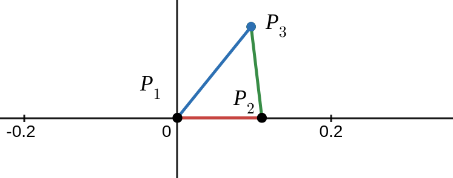
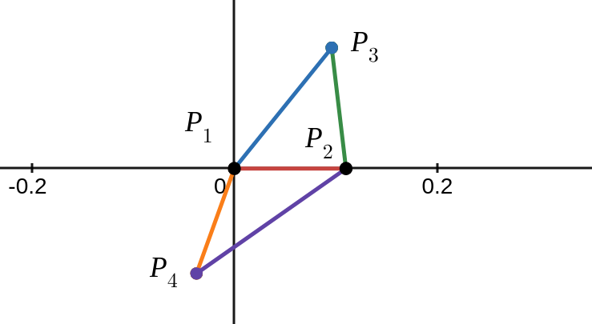
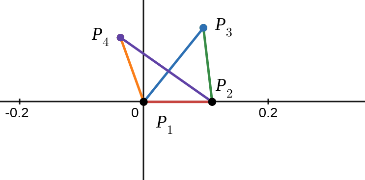

Broken Stick - Tetrahedron Problem
A Triangle Problem
The tetrahedron problem is a 3d version of a 2d classic:
Given a stick broken randomly into 3 pieces, what is the
probability those 3 pieces can meet as edges to form a triangle?
Background
Given a stick broken randomly into \(6\) pieces, what is the probability
that those \(6\) pieces can meet as edges to form a tetrahedron?
I saw this problem tweeted about here: https://twitter.com/benjamindickman/status/1392901506026856457 and it was posted here: https://mathoverflow.net/questions/142983/probability-that-a-stick-randomly-broken-in-five-places-can-form-a-tetrahedron
The tetrahedron problem is intriguing for several reasons. In short, triangles are nice and tetrahedra are not! Moving from 2d to 3d often takes finite problems and adds infinity more problems.
Simulation
Simulation, while not a proof, can be helpful for building our intuition about a problem and validating some results later on. Below is a Monte Carlo simulation.
This simulation utilizes the construction described below to check if a random break can form a tetrahedron.
Note that the simulation here is very slow because of the graphics (and unoptimized JavaScript). You can run a million times faster using C++ like this.
Constructing a Tetrahdron
To start thinking about creating a tetrahedron from 6 pieces, it will be helpful to define a construction, or an algorithm for creating a tetrahedron given a sequence of edge lengths.
Given lengths 1 through 6, or sequence \( \left( l_{1},l_{2},l_{3},l_{4},l_{5},l_{6} \right) \), we construct a tetrahedron in the following 3 steps:
- Form \( \triangle l_1 l_2 l_3 \)
- Form \( \triangle l_1 l_4 l_5 \) so that edge \(l_1\) is a "hinge" and \(l_4\) meets \(l_1\) and \(l_2\)
- Connect edge \(l_6\) from the point between \(l_4\) and \(l_5\) to the point between \(l_2\) and \(l_3\)
Let's clarify and elaborate on these steps.
- Form \( \triangle l_1 l_2 l_3 \)

Let's label the vertices: \[P_{1} = (0,0)\] \[P_{2}=(l_{1},0)\] Point \(P_{3}\) can be found at \((x,y)\) assuming the \(y\) value is positive, from the system of equations: \[ x^2 + y^2 = l_{3}^{2} \] \[ (x-l_{1})^2 + y^2 = l_{2}^{2} \] We find \[ P_{3} = \left( \frac{l_{1}^{2}+l_{3}^{2}-l_{2}^{2}}{2l_{1}} , \sqrt{l_{3}^{2}-\left(\frac{l_{1}^{2}+l_{3}^{2}-l_{2}^{2}}{2l_{1}}\right)^{2}} \right) \]
- Form \( \triangle l_1 l_4 l_5 \) so that edge \(l_1\) is a "hinge" and \(l_4\) meets \(l_1\) and \(l_2\)

The location of \(P_{4}\) in the figure above can be found at \(x,y\), assuming \(y\) is negative, from the system: \[ x^2 + y^2 = l_{4}^{2} \] \[ (x-l_1)^{2} + y^2 = l_{5}^{2} \] We find the point \[ P_{4} = \left( \frac{l_{1}^{2}+l_{4}^{2}-l_{5}^{2}}{2l_1} , - \sqrt{ l_{4}^{2} - \left( \frac{l_{1}^{2}+l_{4}^{2}-l_{5}^{2}}{2l_1} \right)^{2} } \right) \]
Up to here we have plotted everything in 2d. However, if we imagine edge \(l_1\) as a hinge and we let the bottom triangle rotate about this hinge, we can move \(P_4\) up out of the \(xy\)-plane and closer to \(P_3\). The figure above shows \(P_4\) in the position farthest from \(P_{3}\). The figure below shows \(P_4\) in the position closest to \(P_{3}\). Both represent degenerate tetrahedra where \(\triangle l_1 l_2 l_3\) and \(\triangle l_1 l_4 l_5\) are coplanar.

In this configuration, the location of \(P_4\) is \[ P_{4} = \left( \frac{l_{1}^{2}+l_{4}^{2}-l_{5}^{2}}{2l_1} , + \sqrt{ l_{4}^{2} - \left( \frac{l_{1}^{2}+l_{4}^{2}-l_{5}^{2}}{2l_1} \right)^{2} } \right) \]
- Connect edge \(l_6\) from the point between \(l_4\) and \(l_5\) to the point between \(l_2\) and \(l_3\)
To connect \(l_6\) from \(P_3\) to \(P_4\), the length of \(l_6\) needs to be long enough and not too long. That is, \(l_6\) needs to be longer than the shortest distance between \(P_3\) and \(P_4\), and shorter than the longest distance between \(P_3\) and \(P_4\).
The minimum distance between \(P_3\) and \(P_4\) is \[ l_{6_{min}} = \sqrt{ \left( \frac{l_{1}^{2}+l_{4}^{2}-l_{5}^{2}}{2l_1} - \frac{l_{1}^{2}+l_{3}^{2}-l_{2}^{2}}{2l_{1}} \right)^2 + \left( \sqrt{ l_{4}^{2} - \left( \frac{l_{1}^{2}+l_{4}^{2}-l_{5}^{2}}{2l_1} \right)^{2} } - \sqrt{l_{3}^{2}-\left(\frac{l_{1}^{2}+l_{3}^{2}-l_{2}^{2}}{2l_{1}}\right)^{2}} \right)^2 } \] \[ l_{6_{min}} = \sqrt{ \frac{ \left( l_{3}^{2} + l_{4}^{2} -l_{2}^{2} - l_{5}^{2} \right)^2 }{4l_{1}^{2}} + \left( \sqrt{ l_{4}^{2} - \left( \frac{l_{1}^{2}+l_{4}^{2}-l_{5}^{2}}{2l_1} \right)^{2} } - \sqrt{l_{3}^{2}-\left(\frac{l_{1}^{2}+l_{3}^{2}-l_{2}^{2}}{2l_{1}}\right)^{2}} \right)^2 } \] and, similarly, the maximum distance between \(P_3\) and \(P_4\) is \[ l_{6_{max}} = \sqrt{ \frac{ \left( l_{3}^{2} + l_{4}^{2} -l_{2}^{2} - l_{5}^{2} \right)^2 }{4l_{1}^{2}} + \left( \sqrt{ l_{4}^{2} - \left( \frac{l_{1}^{2}+l_{4}^{2}-l_{5}^{2}}{2l_1} \right)^{2} } + \sqrt{l_{3}^{2}-\left(\frac{l_{1}^{2}+l_{3}^{2}-l_{2}^{2}}{2l_{1}}\right)^{2}} \right)^2 } \] To get a (non-degenerate) tetrahedron at this step, we must have \[ l_{6_{min}} \lt l_6 \lt l_{6_{max}} \] If this inequality is satisfied, then the \( \left( x,y,z \right) \) position of \(P_4\) can be determined. As \(P_4\) is rotated about the \(x\)-axis, its \(x\) value remains constant \[ x = \frac{l_{1}^{2}+l_{4}^{2}-l_{5}^{2}}{2l_1} \] and it remains a radius away from the \(x\) axis of (the \(y\) value of \(P_4\) above) \[ r = \sqrt{ l_{4}^{2} - \left( \frac{l_{1}^{2}+l_{4}^{2}-l_{5}^{2}}{2l_1} \right)^{2} } \] We are looking for the point \(x,y,z\) that satisfy: \[ l_6 = \sqrt{ \left( x - P_{3x} \right)^{2} + \left( y - P_{3y} \right)^{2} + \left( z - P_{3z} \right)^{2} } \] \[ y^2 + z^2 = r^2 \] Solving for \(y\) and \(z\) we find \[ y = \frac{ \left(x-P_{3x} \right)^{2} + P_{3y}^{2} + r^2 - l_{6}^{2} }{ 2 P_{3y} } \] \[ z = \sqrt{ r^2 - y^2 } \] which expand in terms of lengths as \[ y = \frac{ \frac{ \left( l_{2}^{2} -l_{3}^{2} +l_{4}^{2} - l_{5}^{2} \right)^{2} - \left( l_{1}^{2} -l_{2}^{2} + l_{3}^{2} \right)^2 - \left( l_{1}^{2}+l_{4}^{2} - l_{5}^{2} \right)^{2} }{4l_{1}^{2}} + l_{3}^{2} + l_{4}^{2} - l_{6}^2 }{ 2 \sqrt{l_{3}^{2} - \frac{ \left( l_{1}^{2}+l_{3}^{2}-l_{2}^{2}\right)^{2} }{4l_{1}^2} } } \] \[ z = \sqrt{ l_{4}^{2} - \left( \frac{l_{1}^{2}+l_{4}^{2}-l_{5}^{2}}{2l_1} \right)^{2} - y^2 } \]
In summary, given lengths \(l_1, l_2, l_3, l_4, l_5, l_6\), the four 3d points of our constructed tetrahedron are located (assuming the tetrahedron is possible) at: \[ P_1 = (0, 0, 0) \] \[ P_2 = (0, l_1, 0) \] \[ P_{3} = \left( \frac{l_{1}^{2}+l_{3}^{2}-l_{2}^{2}}{2l_{1}} , \sqrt{l_{3}^{2}-\left(\frac{l_{1}^{2}+l_{3}^{2}-l_{2}^{2}}{2l_{1}}\right)^{2}}, 0 \right) \] \[ P_{4} = \left( \frac{l_{1}^{2}+l_{4}^{2}-l_{5}^{2}}{2l_1}, \frac{ \frac{ \left( l_{2}^{2} -l_{3}^{2} +l_{4}^{2} - l_{5}^{2} \right)^{2} - \left( l_{1}^{2} -l_{2}^{2} + l_{3}^{2} \right)^2 - \left( l_{1}^{2}+l_{4}^{2} - l_{5}^{2} \right)^{2} }{4l_{1}^{2}} + l_{3}^{2} + l_{4}^{2} - l_{6}^2 }{ 2 \sqrt{l_{3}^{2} - \frac{ \left( l_{1}^{2}+l_{3}^{2}-l_{2}^{2}\right)^{2} }{4l_{1}^2} } } , \sqrt{ l_{4}^{2} - \left( \frac{l_{1}^{2}+l_{4}^{2}-l_{5}^{2}}{2l_1} \right)^{2} - y^2 } \right) \]
Unique Edge Sequences
We have a construction based on a sequence of six lengths, and the success of this construction may depend on the order of those six lengths. Given six lengths of a broken stick, let's sort those pieces in order of increasing length from \(a\) to \(f\).
There are 720 possible arrangents of 6 pieces. These potentially result in 30 unique tetrahedra given 24 degrees of symmetry. "Potentially" because many of these arrangements will not result in a valid tetrahedron for a given break. Given edges \(a,b,c,d,e,f\), the 30 sequences corresponding to 30 unique tetrahedra are:
| (a, b, c, d, e, f) | ( a, b, d, f, c, e) | ( a, b, f, d, c, e) |
| (a, b, c, d, f, e) | ( a, b, d, f, e, c) | ( a, b, f, d, e, c) |
| (a, b, c, e, d, f) | ( a, b, e, c, d, f) | ( a, b, f, e, c, d) |
| (a, b, c, e, f, d) | ( a, b, e, c, f, d) | ( a, b, f, e, d, c) |
| (a, b, c, f, d, e) | ( a, b, e, d, c, f) | ( a, c, d, e, f, b) |
| (a, b, c, f, e, d) | ( a, b, e, d, f, c) | ( a, c, d, f, e, b) |
| (a, b, d, c, e, f) | ( a, b, e, f, c, d) | ( a, c, e, d, f, b) |
| (a, b, d, c, f, e) | ( a, b, e, f, d, c) | ( a, c, e, f, d, b) |
| (a, b, d, e, c, f) | ( a, b, f, c, d, e) | ( a, c, f, d, e, b) |
| (a, b, d, e, f, c) | ( a, b, f, c, e, d) | ( a, c, f, e, d, b) |
which correspond to the following 30 combinations of four triangles:
| abc-ade-bdf-cef | abf-acd-bde-cef | abf-ace-bcd-def |
| abc-adf-bde-cef | abd-acf-bef-cde | abf-ade-bcd-cef |
| abc-ade-bef-cdf | abd-aef-bcf-cde | abf-ace-bde-cdf |
| abc-aef-bde-cdf | abe-acd-bcf-def | abf-ade-bce-cdf |
| abc-adf-bef-cde | abe-acf-bcd-def | acd-aef-bce-bdf |
| abc-aef-bdf-cde | abe-acd-bdf-cef | acd-aef-bcf-bde |
| abd-ace-bcf-def | abe-adf-bcd-cef | ace-adf-bcd-bef |
| abd-acf-bce-def | abe-acf-bdf-cde | ace-adf-bcf-bde |
| abd-ace-bef-cdf | abe-adf-bcf-cde | acf-ade-bcd-bef |
| abd-aef-bce-cdf | abf-acd-bce-def | acf-ade-bce-bdf |
Of the 30 unique tetrahedra, we need not analyze them all! There are 7 fundamental configurations such that if any tetrahedra are possible from a set of six pieces, then one of these 7 must form a valid tetrahedron using the construction above. The 7 fundamental sequences are:
\(T_{1} = \) (a, b, c, d, e, f)
\(T_{2} = \) (a, b, c, d, f, e)
\(T_{3} = \) (a, b, c, e, d, f)
\(T_{4} = \) (a, b, c, e, f, d)
\(T_{9} = \) (a, b, d, e, c, f)
\(T_{10} = \) (a, b, d, e, f, c)
\(T_{25} = \) (a, c, d, e, f, b)
where subscripts indicate the index of the sequence in the original list of 30, from top-to-bottom and left-to-right. The triangle configurations that correspond to these 7 sequences are:
abc-ade-bdf-cef
abc-adf-bde-cef
abc-ade-bef-cdf
abc-aef-bde-cdf
abd-ace-bef-cdf
abd-aef-bec-cdf
acd-aef-bce-bdf
Let's look at an example. Consider the ordered sequence of lengths: \[ \left( 0.12, 0.15, 0.16, 0.17, 0.18, 0.22 \right) \] The seven fundamental sequences for this set of lengths are: \[ T_{1} = (0.12, 0.15, 0.16, 0.17, 0.18, 0.22) \] \[ T_{2} = (0.12, 0.15, 0.16, 0.17, 0.22, 0.18) \] \[ T_{3} = (0.12, 0.15, 0.16, 0.18, 0.17, 0.22) \] \[ T_{4} = (0.12, 0.15, 0.16, 0.18, 0.22, 0.17) \] \[ T_{9} = (0.12, 0.15, 0.17, 0.18, 0.16, 0.22) \] \[ T_{10} = (0.12, 0.15, 0.17, 0.18, 0.22, 0.16) \] \[ T_{25} = (0.12, 0.16, 0.17, 0.18, 0.22, 0.15)\] and these tetrahedra look like this:
Note that the lengths in the above example were fairly similar. In practice, most of the fundamental tetrahedra will not be possible. Consider the lengths \[ \left( 0.05, 0.12, 0.16, 0.17, 0.23, 0.27 \right) \] which result in no tetrahedra at all, or the lengths \[ \left( 0.08, 0.12, 0.16, 0.17, 0.23, 0.24 \right) \] which result in the following four complete and three incomplete tetrahedra:
Probability of a Tetrahedron (a first look)
If we break a stick into six pieces, what is the probability that we get at least one tetrahedron? Yeah, that's a tough one.
Given a particular sequence of six lengths, we can get a tetrahedron if our construction works, which requires
- \(l_1\), \(l_2\), and \(l_3\) can form a triangle
- \(l_1\), \(l_4\), and \(l_5\) can form a triangle
- \(l_6\) can reach from \(P_3\) to \(P_4\)
Given a stick broken into six pieces where the sorted lengths are \(a,b,c,d,e,f\), we have at least one tetrahedron if \[ \left( a + b > c \land a + d > e \land f \gt f_{1min} \land f \lt f_{1max} \right) \] \[ \lor \] \[ \left( a + b > c \land a + d > f \land e \gt e_{2min} \land e \lt e_{2max} \right) \] \[ \lor \] \[ \left( a + b > c \land a + d > e \land f \gt f_{3min} \land f \lt f_{3max} \right) \] \[ \lor \] \[ \left( a + b > c \land a + e > f \land d \gt d_{4min} \land d \lt d_{4max} \right) \] \[ \lor \] \[ \left( a + b > d \land a + c > e \land f \gt f_{9min} \land f \lt f_{9max} \right) \] \[ \lor \] \[ \left( a + b > d \land a + e > f \land c \gt c_{10min} \land c \lt c_{10max} \right) \] \[ \lor \] \[ \left( a + c > d \land a + e > f \land b \gt b_{25min} \land b \lt b_{25max} \right) \] where \(f_{1min}\) is the minimum distance \(l_{6_{min}}\) for \(f\) in tetrahedron \(T_{1}\), and so on.
Expanding the min and max terms creates a gigantic thing that maybe I can put together correctly: \[ ( a + b > c \land a + d > e \] \[ \lor \] \[ ( a + b > c \land a + d > f \] \[ \lor \] \[ ( a + b > c \land a + d > e \] \[ \lor \] \[ ( a + b > c \land a + e > f \] \[ \lor \] \[ ( a + b > d \land a + c > e \] \[ \lor \] \[ ( a + b > d \land a + e > f \] \[ \lor \] \[ ( a + c > d \land a + e > f \]
Probability Density of \(L\)
The probability density of piece length being \(L\) from a unit stick broken into \(n\) pieces is \[(n-1)(1-L)^{n-2}\] so for six pieces we have \[5(1-L)^{4}\] and the probability of a piece being between length \(l_1\) and \(l_2\) where \(0 \lt l_1 \lt l_2 \lt 1\) is \[\int_{l_1}^{l_2} 5(1-L)^{4} \ dL = (1-l_1)^{5} - (1-l_2)^{5} \]
The PDF \(f(x)\) for each length \(a\) through \(f\) is: \[ f_a(x) = 38880 x^4 -25920 x^3 + 6480 x^2 -720 x + 30 \quad 0 \leq x \leq \frac{1}{6} \] \[ f_b(x) = \begin{cases} -100650x^4 + 54600x^3 - 9900x^2 + 600x & 0 \leq x \leq \frac{1}{6} \\ 93750x^4 - 75000x^3+22500x^2-3000x+150 & \frac{1}{6} \lt x \leq \frac{1}{5} \\ \end{cases} \] \[ f_c(x) = \begin{cases} 90600x^4 -36000x^3 +3600 x^2 & 0 \leq x \leq \frac{1}{6} \\ -298200x^4 + 223200x^3 -61200x^2 +7200x -300 & \frac{1}{6} \lt x \leq \frac{1}{5} \\ 76800x^4 -76800x^3+28800x^2-4800x+300 & \frac{1}{5} \lt x \leq \frac{1}{4} \\ \end{cases} \] \[ f_d(x) = \begin{cases} -32400x^4 + 7200x^3 & 0 \leq x \leq \frac{1}{6} \\ 356400x^{4}-252000x^{3}+64800x^{2}-7200x+300 & \frac{1}{6} \lt x \leq \frac{1}{5} \\ -206100x^{4}+198000x^{3}-70200x^{2}+10800x-600 & \frac{1}{5} \lt x \leq \frac{1}{4} \\ 24300x^4-32400x^3+16200x^2-3600x+300 & \frac{1}{4} \lt x \leq \frac{1}{3} \\ \end{cases} \] \[ f_e(x) = \begin{cases} 3600x^4 & 0 \leq x \leq \frac{1}{6} \\ -190800x^{4}+129600x^{3}-32400x^{2}+3600x-150 & \frac{1}{6} \lt x \leq \frac{1}{5} \\ 184200x^{4}-170400x^{3}+57600x^{2}-8400x+450 & \frac{1}{4} \lt x \leq \frac{1}{5} \\ -46200x^{4}+60000x^{3}-28800x^{2}+6000x-450 & \frac{1}{3} \lt x \leq \frac{1}{4} \\ 2400x^4-4800x^3+3600x^2-1200x+15 & \frac{1}{2} \lt x \leq 1 \\ \end{cases} \] \[ f_f(x) = \begin{cases} 38880x^4-25920x^3+6480x^2-720x+30 & \frac{1}{6} \leq x \leq \frac{1}{5} \\ -54870x^{4}+49080x^{3}-16020x^{2}+2280x-120 & \frac{1}{5} \lt x \leq \frac{1}{4} \\ 21930x^{4}-27720x^{3}+12780x^{2}-2520x+180 & \frac{1}{4} \lt x \leq \frac{1}{3} \\ -2370x^4 + 4680 x^3 -3420 x^2 +1080x -120 & \frac{1}{3} \lt x \leq \frac{1}{2} \\ 30x^4 -120 x^3 + 180 x^2 -120 x + 30 & \frac{1}{2} \lt x \leq 1 \\ \end{cases} \] It is important to note that these distributions are not independent.